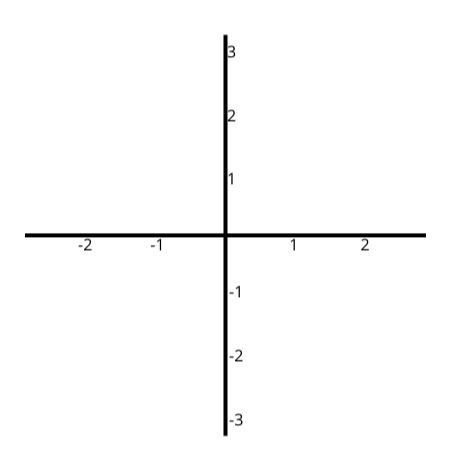
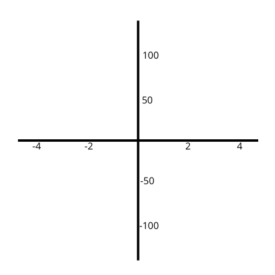

| Início | FUNÇÕES INTRODUÇÃO |
Função Afim | Função Quadrática | Função Exponencial | Função Exponencial | Conteúdo Extra |
As funções são representadas por duas variáveis, uma independente e outra dependente. A variável independente é geralmente representada por “x”, e pela questão de simplificação desse portfólio eu usarei apenas “x” como variável independente. A outra variável é dependente porque depende do resultado da variável com os elementos adicionais da função para ganhar seu valor, é geralmente representada por F(x), que também será usado como padrão, mesmo podendo ser trocada por “y” para facilitar a visão gráfica. Toda função também possui uma imagem e um domínio; o domínio da função é simplesmente o valor atribuído à variável para receber um valor, este valor é a imagem; eles vêm em pares, sendo que cada domínio é atribuído a sua imagem.
A seguir, serão mostradas representações de gráficos em branco:s
|  |  |
Os gráficos são sempre feitos com marcações a
partir do centro (o ponto (0, 0)) e se estendem
aumentando / diminuindo seus valores de formas
periódicas, sendo que o criador do gráfico escolhe
a distância entre duas marcações e o valor pulado
entre cada marcação. Na primeira imagem, o eixo "x"
e o eixo "y" tem a mesma marcação, já no gráfico
2, eles tem marcações diferentes, já que o
valor e a distância entre as marcações são diferentes.
Dentro deste conteúdo, poderia-se falar sobre escala,
mas, por questões da quantidade de conteúdos abordados,
deixarei para outra hora.